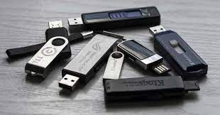
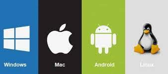
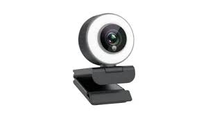
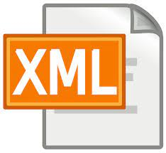
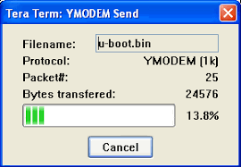

NAVEGADOR: Aplicación que nos permite movernos por Internet, lo que se entiende comúnmente por "navegar"
NCP(NETWORK CONTROL PROTOCOL): Protocolo de Control de Red. Es un protocolo del Network Layer.
NODO: Computadora o cualquier otro dispositivo conectado a una red.
NOTEBOOK: Microcomputadora portátil de gran potencia de cálculo y con batería que le proporciona la capacidad de trabajo sin estar enchufada a la red eléctrica.
ONLINE: Equipos o dispositivos que están en comunicación directa o encendidos.
OFFLINE: Equipos o dispositivos que no están en comunicación directa o apagados.
OCR(OPTICAL CHARACTER RECOGNITION): Reconocimiento óptico de caracteres. Técnica de registro y lectura de caracteres u otros símbolos en un archivo de imagen de mapa de bits.
PACKET DRIVER: Pequeño programa situado entre la tarjeta de red y el programa de TCP de manera que proporciona un interface estandar que los programas pueden usar.
PASSWORD: Contraseña utilizada para ingresar en una red o en un sistema de manera segura.
PENDRIVE: Dispositivo de almacenamiento de datos que incorpora una interfaz USB para conectar a un puerto USB.
PHISING(FISHING): Es un tipo de estafa cibernéticas que se caracteriza por intentar adquirir de forma fraudulenta información confidencial, como puede ser una contraseña o información bancaria.
QR(CÓDIGO QR): Sistema para almacenar información en una matriz de puntos o un código de barras bidimensional
RAM(RANDOM-ACCESS MEMORY): Memoria primaria de una computadora. En las PCs es accesible por el procesador a través del puente norte del chipset.
RATÓN: También conocido como mouse. Puntero manejado a mano para manipular el cursor en la pantalla. Especialmente útil en las GUI.
RED: Interconexión de una o más computadoras a través de hardware y software.

SERVIDOR: Computadora o programa que proporciona recursos en una red dando información a los clientes.
SISTEMA: Conjunto de elementos interrelacionados que trabajan juntos para obtener un resultado deseado.
SISTEMA DE MANEJO DE BASE DE DATOS: Software que maneja la organización, localización, catalogación, almacenamiento, recuperación y mantención de datos en una base de datos.
SISTEMA OPERATIVO: Programa de control que dirige el hardware de una computadora.
TERMINAL: Dispositivo en un sistema o red de comunicación en el cual los datos pueden ingresarse o salir, pero no procesarse.
TERMINAL INTELIGENTE: Es una terminal con capacidad de procesamiento en sí misma.
TESTING: La prueba de un programa o un sistema para asegurar que funciona adecuadamente.
URL(UNIFORM RESOURCE LOCATOR): Localizador uniforme de recursos. Estándar que especifica un tipo de servicio en Internet, así como la localización exacta del archivo correspondiente. Dirección de un sitio web, universal y único a nivel mundial.
USB(UNIVERSAL SERIAL BUS): Tecnología de bus que permite conectar a la computadora periféricos externos que requieran gran flujo de datos
VIRUS: Un virus informático es un programa de ordenador que puede infectar otros programas modificándolos, para incluir una copia de si mismo. Los virus pueden destruir intencionadamente datos en la computadora.
VIRTUAL: Se dice de la representación en una computadora de algo que no existe, o no está presente en ese lugar.
VR(VIRTUAL REALITY): Realidad Virtual.
WEBCAM: Cámara web. Es una pequeña cámara digital conectada a una computadora, la cual puede capturar imágenes y transmitirlas a través de Internet.
WI-FI: Mecanismo de conexión de dispositivos electrónicos de forma inalámbrica.
XML(EXTENSIBLE MARKUP LANGUAGE): Lenguaje basado en etiquetas, diseñado específicamente para proporcionar información en las páginas Web.
YAML: Formato estándar de serialización de datos legible por humanos que intenta reducir la abstracción y hacer la programación más sencilla.
YMODEM: Protocolo de corrección de errores para modems.
ZIP DRIVE: Periférico de entrada/salida que maneja los discos Zip.
ZIP: Disco magnético removible que permite almacenar 100 ó 250 Mb de información, de gran estabilidad y duración.